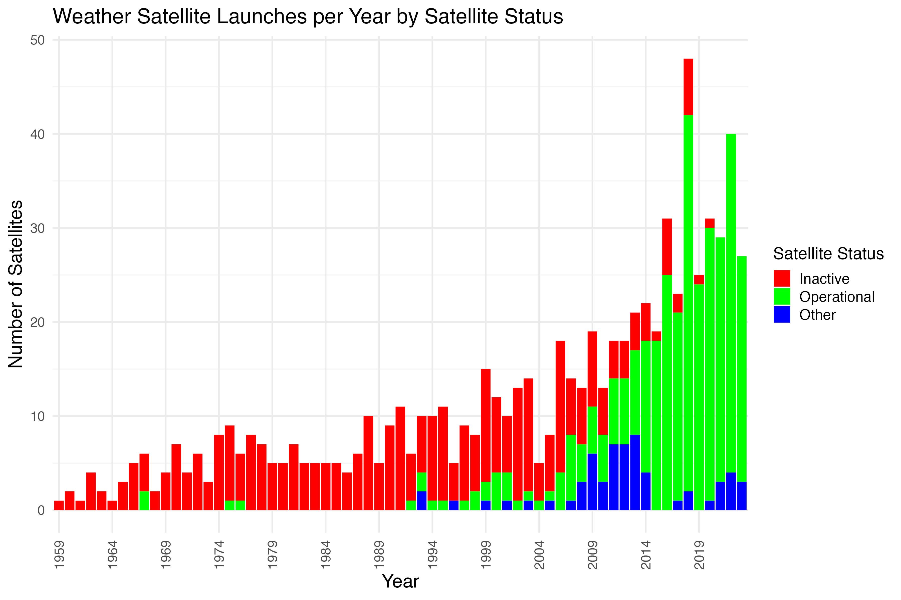

3 Data Visualization
The code used in this section is available here.
This section shows the visual data explorations of Martian weather, stock market trends, global space launch competitiveness, the ascent of private spaceflight, and the evolving landscape of weather satellite technology. It leverages visualization tools like Tableau, Plotly, ggplot2, and more, to convey the stories contained within the datasets.
3.1 Mars Weather Dashboard with Tableau
Note: all the series visualized in this dashboard come from the same multivariate dataset.
For a better view of the widget below, see it in Tableau public here.

Figure 3.1 is a multi-panel presentation of Martian climate data, structured into four distinct panels, each illustrating a unique aspect of the Martian environment as observed by the Curiosity Rover over several Martian years, specifically from years 31 to 37. These panels tell the ongoing story of a planet being observed, analyzed, and understood, piece by piece, season by season, year by Martian year.
In the upper left, we have a panel capturing the varying sunrise and sunset times. The fluctuation is depicted as a yellow band against a dark background, a visual metaphor for daylight hours. Below this, the bottom left panel portrays ground temperature, with vertical bars in seasonal colors representing the minimum and maximum temperatures recorded. The colors (blue for winter, green for spring, orange for summer, and red for autumn) create a thermal theme to the figure, highlighting the cold dominance of the Martian climate, where even summer days struggle to reach above freezing.
To the right, the upper panel focuses on atmospheric pressure, with a series of box and whisker plots organized by Martian months. Each plot is a snapshot of variability, with the boxes indicating the middle 50% of recorded pressures and the whiskers extending to the extremes. The data suggests a degree of predictability in the expected pressure on Mars. The final panel, bottom right, shifts to air temperature, charted over Martian months with a color gradient that speaks to temperature intensity. Each year is a line of colored squares, each square a month, and each shade a degree, telling a story of a cold planet.
The data shown in the dashboard shows the outcomes of public investment in space infrastructure. The gathering of Martian environmental data is made possible by the advanced technology aboard the Curiosity Rover, showing how dedicating resources towards the pursuit of knowledge beyond our planet is a stepping stone for humanity’s aspirations in space, providing invaluable insights that could shape the future of space exploration and colonization. Furthermore, for those who might one day set foot on Mars, this data is a source for preparation. It offers a preview of the challenges to be faced in a hostile environment.
3.2 Financial Candlestick Charts with Plotly
Figure 3.2 presents trading data for ARKX, AVAV, KTOS, and TRMB, with the option to change between them. The data is illustrated with candlesticks and Simple Moving Averages (SMAs) to indicate trends over time. Candlestick colors alternate, showcasing fluctuations in price: green signifies weeks where the closing price was higher than the opening, and red is the opposite.
For example, the ARKX chart covers a period from January 28 to February 18, 2024, during which prices fluctuated between approximately $14.00 and $14.9, with a noticeable peak and trough, suggesting volatility within this period. The blue line traces the 5-day SMA, which wiggles above and below the 14.5 price mark, indicating short-term price movements. Meanwhile, the orange line, depicting the 20-day SMA, slopes more steadily, suggesting a slower response to price changes. The purple line, representing the 100-day SMA, is mostly at the bottom of the chart, hinting at a much longer-term perspective on price trends. In this period, observing the 5-day as a short-term trend intersects the 20-day SMA once on the plot, indicating a buy signal based on the crossover strategy we covered in class.
3.4 The Rise of Private Launches
Figure 3.4 compares yearly rocket launches between SpaceX and every other agency from 1960 to around 2020. In the graph, the ‘Other’ category, depicted in red, shows a substantial number of launches in the early years, with a peak of over 120 annually in the mid-1960s. Despite fluctuations, this activity remained high until after 1990, when there was a significant decline, dropping to nearly 40 launches per year. This sharp decrease mirrors the end of the Cold War, underscoring a shift in governmental perspectives on space exploration. It suggests that space exploration lost its status as a competitive priority following the Cold War, implying it was primarily a surrogate for military competition rather than a pursuit of collective advancement or curiosity.
In contrast, SpaceX, represented in blue, entered the chart around 2010. Initially, its launch numbers were modest but have consistently risen over the decade. While the frequency of launches from the ‘Other’ category continues to decline, SpaceX has experienced a notable increase. By 2020, SpaceX’s annual launch count is significant compared to all other global agencies combined, signaling a pivotal change in space exploration and the commercial rocket launch industry. This graph narrates the sector’s evolution, highlighting the transition from a field dominated by government players to one where a single company from the private sector starts to lead.
3.5 Weather Satellites with ggplot2

Figure 3.5 visualizes the launch history of weather satellites from 1959 to 2024, with each bar denoting the annual launch count and differentiated by the operational status of these satellites. The colors red, green, and blue signify inactive, operational, and other statuses. Launch activity shows a steady rise from the late 1950s through the early 2000s, peaking with a significant increase starting in the late 1990s. This visualization tracks the growth in launches and illustrates the lifecycle within the weather satellite sector, where satellites transition from active to inactive over time. It highlights the ongoing effort to rejuvenate and expand the network of operational satellites, emphasizing the sector’s commitment to enhancing weather forecasting capabilities. The focus on weather satellites makes this trend particularly noteworthy, underscoring the specialized investment and technological advancement over the past six decades.
3.6 Search Interest in Space Terms
Space Exploration, Mars, SpaceX, and Space Exploration.Figure 3.6 shows the Google Trends search interest in the United States for four key terms: Mars, Satellites, Space Exploration, and SpaceX, from 2020 to early 2024. A different color represents each term—Mars in blue, Satellites in red, Space Exploration in green, and SpaceX in purple—across a timeline, with the vertical axis measuring search interest from 0 to 100 and the horizontal axis spanning from 2020 to 2024.
Mars exhibits periodic spikes in interest tied to noteworthy events related to the planet, revealing moments of heightened public curiosity. The interest in Satellites shows a steadier trend with occasional peaks, reflecting public attention to satellite launches or developments in satellite technology. The pattern for Space Exploration is notably varied, with frequent and abrupt fluctuations in search interest, suggesting a constantly changing public fascination with exploration missions or discoveries. SpaceX, on the other hand, demonstrates a persistent interest with significant peaks at crucial company milestones, like rocket launches or major announcements.
This graph shows the evolving nature of public interest and engagement with space-related subjects over the last four years. The interactions among these trends highlight periods when advancements or news in space technology and exploration have sparked increased public inquiry and enthusiasm.